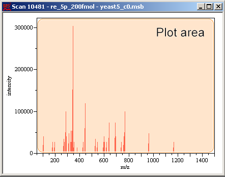
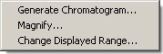
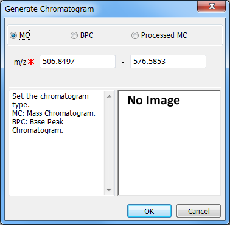
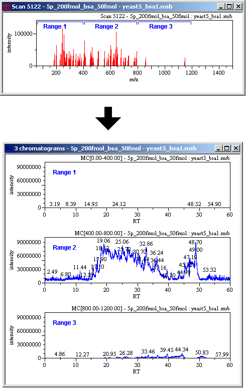

A mass chromatogram (MC) or base peak chromatogram (BPC) can be generated for an m/z range in a spectrum.
Right-click at one end of an m/z range in a spectrum and drag to the other end.
Note:
The mouse pointer appears as
 .
.
Click in the plot area as shown below.
The context menu appears.
Select [Generate Chromatogram].
The Generate Chromatogram dialog appears.
Select [MC], [BPC], or [Processed MC] and click [OK]. ([MC] is generating mass chromatogram from raw data and [Processed MC] is from manipurated spectra.)
Adjust the m/z range if necessary.
If you select the Stacked display mode, you can display the chromatograms of multiple m/z ranges of a spectrum.
